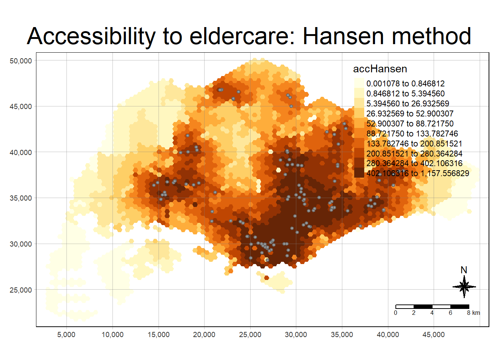
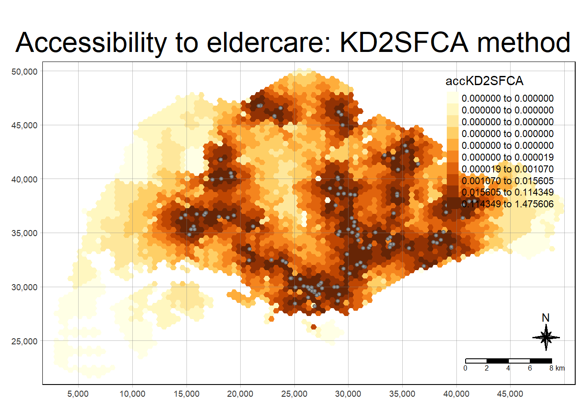
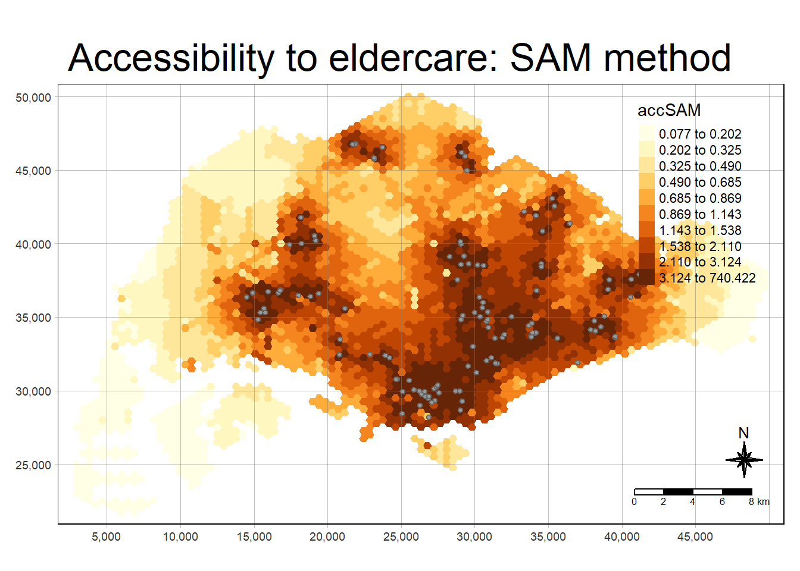

pacman::p_load(tmap, SpatialAcc, sf,
ggstatsplot, reshape2,
tidyverse)Hands-on Exercise 9: Modelling Geographical Accessibility
1 Overview
In this hands-on exercise, we’ll explore how to model geographical accessibility using R’s geospatial analysis packages.
By the end of this exercise, you’ll be able to:
Import GIS polygon data into R and save it as a simple feature data frame with functions from the sf package.
Import aspatial data into R and similarly save it as a simple feature data frame with sf functions.
Compute accessibility measures using Hansen’s potential model and the Spatial Accessibility Measure (SAM).
Visualize accessibility measures with the tmap and ggplot2 packages.
2 The Data
This hands-on exercise will utilize four data sets:
MP14_SUBZONE_NO_SEA_PL: GIS data for the URA Master Plan 2014 subzone boundaries, downloaded from data.gov.sg.
Hexagons: GIS data consisting of 250m radius hexagons, created using the
st_make_grid()function from thesfpackage, and provided in ESRI shapefile format.ELDERCARE: GIS data showing the locations of eldercare services, also downloaded from data.gov.sg. It includes two formats: ESRI shapefile (used for this exercise) and Google KML.
OD_Matrix: A CSV distance matrix with six fields:
origin_id: Unique identifier for the origin (
fidof the hexagon data set).destination_id: Unique identifier for the destination (
fidof the ELDERCARE data set).entry_cost: Perpendicular distance from the origin to the nearest road.
network_cost: Actual distance between the origin and destination.
exit_cost: Perpendicular distance from the destination to the nearest road.
total_cost: Sum of entry, network, and exit costs.
All values of cost related fields are in meters.
Note: Except for the MP14_SUBZONE_NO_SEA_PL data set, the other three were specially prepared by Prof. Kam for teaching and research purposes. Students enrolled in Geospatial Analytics and Applications course may use them for hands-on exercises, but formal approval from Prof. Kam is required for any other use.
3 Getting Started
Before we begin, it’s essential to install the necessary R packages and load them into the RStudio environment. The following R packages are required for this exercise:
Spatial Data Handling:
sfGeographical Accessibility Modeling:
spatialAccAttribute Data Handling:
tidyverse(especiallyreadranddplyr)Thematic Mapping:
tmapStatistical Graphics:
ggplot2Statistical Analysis:
ggstatsplot
The code chunk below installs and loads these packages into RStudio:
Note that by loading tidyverse, there’s no need to install readr, dplyr, and ggplot2 separately, as it includes additional packages such as tidyr, stringr, forcats, tibble, purrr, and magrittr.
4 Geospatial Data Wrangling
4.1 Import geospatial data
We will import three geospatial data sets from the data/geospatial sub-folder: MP14_SUBZONE_NO_SEA_PL, hexagons, and ELDERCARE. The code chunk below imports these shapefiles using the st_read() function from the sf package.
mpsz <- st_read(dsn = "data/geospatial", layer = "MP14_SUBZONE_NO_SEA_PL")Reading layer `MP14_SUBZONE_NO_SEA_PL' from data source
`C:\thuphuong1110\ISSS626-GAA\Hands-on_Ex\Hands-on_Ex09\data\geospatial'
using driver `ESRI Shapefile'
Simple feature collection with 323 features and 15 fields
Geometry type: MULTIPOLYGON
Dimension: XY
Bounding box: xmin: 2667.538 ymin: 15748.72 xmax: 56396.44 ymax: 50256.33
Projected CRS: SVY21hexagons <- st_read(dsn = "data/geospatial", layer = "hexagons") Reading layer `hexagons' from data source
`C:\thuphuong1110\ISSS626-GAA\Hands-on_Ex\Hands-on_Ex09\data\geospatial'
using driver `ESRI Shapefile'
Simple feature collection with 3125 features and 6 fields
Geometry type: POLYGON
Dimension: XY
Bounding box: xmin: 2667.538 ymin: 21506.33 xmax: 50010.26 ymax: 50256.33
Projected CRS: SVY21 / Singapore TMeldercare <- st_read(dsn = "data/geospatial", layer = "ELDERCARE") Reading layer `ELDERCARE' from data source
`C:\thuphuong1110\ISSS626-GAA\Hands-on_Ex\Hands-on_Ex09\data\geospatial'
using driver `ESRI Shapefile'
Simple feature collection with 120 features and 19 fields
Geometry type: POINT
Dimension: XY
Bounding box: xmin: 14481.92 ymin: 28218.43 xmax: 41665.14 ymax: 46804.9
Projected CRS: SVY21 / Singapore TMThe report indicates that the R object containing the imported MP14_SUBZONE_WEB_PL shapefile is named mpsz. It is a simple feature object with geometry type multipolygon. It is important to note that the mpsz simple feature object lacks EPSG information.
4.2 Update CRS information
The code chunk below updates the newly imported mpsz with the correct ESPG code (i.e. 3414)
mpsz <- st_transform(mpsz, 3414)
eldercare <- st_transform(eldercare, 3414)
hexagons <- st_transform(hexagons, 3414)After transforming the projection metadata, we can verify the projection of the newly transformed mpsz_svy21 using st_crs() of sf package as in below code chunk.
st_crs(mpsz)Coordinate Reference System:
User input: EPSG:3414
wkt:
PROJCRS["SVY21 / Singapore TM",
BASEGEOGCRS["SVY21",
DATUM["SVY21",
ELLIPSOID["WGS 84",6378137,298.257223563,
LENGTHUNIT["metre",1]]],
PRIMEM["Greenwich",0,
ANGLEUNIT["degree",0.0174532925199433]],
ID["EPSG",4757]],
CONVERSION["Singapore Transverse Mercator",
METHOD["Transverse Mercator",
ID["EPSG",9807]],
PARAMETER["Latitude of natural origin",1.36666666666667,
ANGLEUNIT["degree",0.0174532925199433],
ID["EPSG",8801]],
PARAMETER["Longitude of natural origin",103.833333333333,
ANGLEUNIT["degree",0.0174532925199433],
ID["EPSG",8802]],
PARAMETER["Scale factor at natural origin",1,
SCALEUNIT["unity",1],
ID["EPSG",8805]],
PARAMETER["False easting",28001.642,
LENGTHUNIT["metre",1],
ID["EPSG",8806]],
PARAMETER["False northing",38744.572,
LENGTHUNIT["metre",1],
ID["EPSG",8807]]],
CS[Cartesian,2],
AXIS["northing (N)",north,
ORDER[1],
LENGTHUNIT["metre",1]],
AXIS["easting (E)",east,
ORDER[2],
LENGTHUNIT["metre",1]],
USAGE[
SCOPE["Cadastre, engineering survey, topographic mapping."],
AREA["Singapore - onshore and offshore."],
BBOX[1.13,103.59,1.47,104.07]],
ID["EPSG",3414]]Notice that the EPSG is indicated as 3414 now.
4.3 Clean and Update attribute fields of the geospatial data
Many redundant fields exist in both data tables eldercare and hexagons. The code chunks below excludes these redundant fields while adding two new fields: demand to the hexagons data table and capacity to the eldercare simple feature data frame. Both fields will be derived using the mutate() function from the dplyr package.
eldercare <- eldercare %>%
select(fid, ADDRESSPOS) %>%
mutate(capacity = 100)hexagons <- hexagons %>%
select(fid) %>%
mutate(demand = 100)For this hands-on exercise, a constant value of 100 is used for both the capacity and demand fields. In practice, actual demand for the hexagons and capacity for the eldercare centers should be applied.
5 Aspatial Data Handling and Wrangling
5.1 Import distance matrix
The code chunk below uses read_cvs() of readr package to import OD_Matrix.csv into RStudio as a tibble data.frame called ODMatrix.
ODMatrix <- read_csv("data/aspatial/OD_Matrix.csv", skip = 0)Rows: 375000 Columns: 6
── Column specification ────────────────────────────────────────────────────────
Delimiter: ","
dbl (6): origin_id, destination_id, entry_cost, network_cost, exit_cost, tot...
ℹ Use `spec()` to retrieve the full column specification for this data.
ℹ Specify the column types or set `show_col_types = FALSE` to quiet this message.5.2 Tidy distance matrix
The imported ODMatrix organised the distance matrix columnwise.
head(ODMatrix)# A tibble: 6 × 6
origin_id destination_id entry_cost network_cost exit_cost total_cost
<dbl> <dbl> <dbl> <dbl> <dbl> <dbl>
1 1 1 668. 19847. 47.6 20562.
2 1 2 668. 45027. 31.9 45727.
3 1 3 668. 17644. 173. 18486.
4 1 4 668. 36010. 92.2 36770.
5 1 5 668. 31068. 64.6 31801.
6 1 6 668. 31195. 117. 31980.However, most of the modelling packages in R is expecting a matrix look similar to the figure below.

The rows represent origins (also know as from field) and the columns represent destination (i.e. also known as to field.). The pivot_wider() function from the tidyr package was used to transform the O-D matrix from a long format to a wide format.
distmat <- ODMatrix %>%
select(origin_id, destination_id, total_cost) %>%
pivot_wider(names_from = destination_id, values_from = total_cost)%>%
select(c(-c('origin_id')))As SVY21 projected coordinate system is used, the distance is measured in metre. The code chunk below converta the unit measurement from metre to kilometre.
distmat_km <- as.matrix(distmat/1000)6 Model and Visualize Accessibility using Hansen Method
6.1 Compute Hansen’s accessibility
Now we are ready to compute Hansen’s accessibility using the ac() function from the SpatialAcc package. Before proceeding, it’s advisable to review the function’s arguments at least once to ensure that all required inputs are available.
The code chunk below calculates Hansen’s accessibility, using ac() from the SpatialAcc package, and saves the output in a data frame called acc_Hansen using the data.frame() function.
acc_Hansen <- data.frame(ac(hexagons$demand,
eldercare$capacity,
distmat_km,
#d0 = 50,
power = 2,
family = "Hansen"))head(acc_Hansen) ac.hexagons.demand..eldercare.capacity..distmat_km..power...2..
1 1.648313e-14
2 1.096143e-16
3 3.865857e-17
4 1.482856e-17
5 1.051348e-17
6 5.076391e-18The default field name is messy, we rename it to accHansen using the code chunk below.
colnames(acc_Hansen) <- "accHansen"Notice that the field name is much more tidy now.
head(acc_Hansen) accHansen
1 1.648313e-14
2 1.096143e-16
3 3.865857e-17
4 1.482856e-17
5 1.051348e-17
6 5.076391e-18Next, we convert the data table into tibble format by using the code chunk below.
acc_Hansen <- as_tibble(acc_Hansen)Lastly, bind_cols() of dplyr is used to join the acc_Hansen tibble data frame with the hexagons simple feature data frame. The output is saved in hexagon_Hansen.
hexagon_Hansen <- bind_cols(hexagons, acc_Hansen)Notice that hexagon_Hansen is a simple feature data frame and not a tibble data frame.
head(hexagon_Hansen)Simple feature collection with 6 features and 3 fields
Geometry type: POLYGON
Dimension: XY
Bounding box: xmin: 2667.538 ymin: 22756.33 xmax: 3244.888 ymax: 27756.33
Projected CRS: SVY21 / Singapore TM
fid demand accHansen geometry
1 1 100 1.648313e-14 POLYGON ((2667.538 27506.33...
2 2 100 1.096143e-16 POLYGON ((2667.538 25006.33...
3 3 100 3.865857e-17 POLYGON ((2667.538 24506.33...
4 4 100 1.482856e-17 POLYGON ((2667.538 24006.33...
5 5 100 1.051348e-17 POLYGON ((2667.538 23506.33...
6 6 100 5.076391e-18 POLYGON ((2667.538 23006.33...The steps above can be perform using a single code chunk as below.
acc_Hansen <- data.frame(ac(hexagons$demand,
eldercare$capacity,
distmat_km,
#d0 = 50,
power = 0.5,
family = "Hansen"))
colnames(acc_Hansen) <- "accHansen"
acc_Hansen <- as_tibble(acc_Hansen)
hexagon_Hansen <- bind_cols(hexagons, acc_Hansen)6.2 Visualize Hansen’s accessibility
6.2.1 Extract map extend
First we extract the extend of hexagons simple feature data frame by using st_bbox() of sf package.
mapex <- st_bbox(hexagons)The code chunk below uses a collection of mapping fucntions of tmap package to create a high cartographic quality accessibility to eldercare centre in Singapore.
tmap_mode("plot")tmap mode set to plottingtm_shape(hexagon_Hansen,
bbox = mapex) +
tm_fill(col = "accHansen",
n = 10,
style = "quantile",
border.col = "black",
border.lwd = 1) +
tm_shape(eldercare) +
tm_symbols(size = 0.1) +
tm_layout(main.title = "Accessibility to eldercare: Hansen method",
main.title.position = "center",
main.title.size = 2,
legend.outside = FALSE,
legend.height = 0.45,
legend.width = 3.0,
legend.format = list(digits = 6),
legend.position = c("right", "top"),
frame = TRUE) +
tm_compass(type="8star", size = 2) +
tm_scale_bar(width = 0.15) +
tm_grid(lwd = 0.1, alpha = 0.5)
6.3 Statistical graphic visualisation
In this section, we will compare the distribution of Hansen’s accessibility values by URA Planning Region.
First, we need to add the planning region field to the hexagon_Hansen simple feature data frame using the code chunk below.
hexagon_Hansen <- st_join(hexagon_Hansen, mpsz,
join = st_intersects)Next, ggplot() will be used to plot the distribution by using boxplot graphical method.
ggplot(data=hexagon_Hansen,
aes(y = log(accHansen),
x= REGION_N)) +
geom_boxplot() +
geom_point(stat="summary",
fun.y="mean",
colour ="red",
size=2)Warning in geom_point(stat = "summary", fun.y = "mean", colour = "red", :
Ignoring unknown parameters: `fun.y`No summary function supplied, defaulting to `mean_se()`
7 Model and Visualize Accessibility using KD2SFCA Method
7.1 Compute KD2SFCA’s accessibility
In this section, we will repeat most of the steps used in the previous section to conduct the analysis, with some code combined into a single code chunk.
The code chunk below calculates Hansen’s accessibility using the ac() function from the SpatialAcc package, and the output is saved in a data frame called acc_KD2SFCA. Note that KD2SFCA is specified for the family argument.
acc_KD2SFCA <- data.frame(ac(hexagons$demand,
eldercare$capacity,
distmat_km,
d0 = 50,
power = 2,
family = "KD2SFCA"))
colnames(acc_KD2SFCA) <- "accKD2SFCA"
acc_KD2SFCA <- as_tibble(acc_KD2SFCA)
hexagon_KD2SFCA <- bind_cols(hexagons, acc_KD2SFCA)7.2 Visualize KD2SFCA’s accessibility
The code chunk below uses a collection of mapping fucntions of tmap package to create a high cartographic quality accessibility to eldercare centre in Singapore. Notice that mapex is reused for bbox argument.
tmap_mode("plot")tmap mode set to plottingtm_shape(hexagon_KD2SFCA,
bbox = mapex) +
tm_fill(col = "accKD2SFCA",
n = 10,
style = "quantile",
border.col = "black",
border.lwd = 1) +
tm_shape(eldercare) +
tm_symbols(size = 0.1) +
tm_layout(main.title = "Accessibility to eldercare: KD2SFCA method",
main.title.position = "center",
main.title.size = 2,
legend.outside = FALSE,
legend.height = 0.45,
legend.width = 3.0,
legend.format = list(digits = 6),
legend.position = c("right", "top"),
frame = TRUE) +
tm_compass(type="8star", size = 2) +
tm_scale_bar(width = 0.15) +
tm_grid(lwd = 0.1, alpha = 0.5)
7.3 Statistical graphic visualisation
Now, we will compare the distribution of KD2CFA accessibility values by URA Planning Region.
First, we need to add the planning region field to the hexagon_KD2SFCA simple feature data frame using the code chunk below.
hexagon_KD2SFCA <- st_join(hexagon_KD2SFCA, mpsz,
join = st_intersects)Next, ggplot() will be used to plot the distribution by using boxplot.
ggplot(data=hexagon_KD2SFCA,
aes(y = accKD2SFCA,
x= REGION_N)) +
geom_boxplot() +
geom_point(stat="summary",
fun.y="mean",
colour ="red",
size=2)Warning in geom_point(stat = "summary", fun.y = "mean", colour = "red", :
Ignoring unknown parameters: `fun.y`No summary function supplied, defaulting to `mean_se()`
8 Model and Visualize Accessibility using Spatial Accessibility Measure (SAM) Method
8.1 Compute SAM Accessibility
In this section, we will repeat most of the steps learned in the previous section to perform the analysis, with some code combined into a single code chunk.
The code chunk below calculates Hansen’s accessibility using the ac() function from the SpatialAcc package, and the output is saved in a data frame called acc_SAM. Note that SAM is specified for the family argument.
acc_SAM <- data.frame(ac(hexagons$demand,
eldercare$capacity,
distmat_km,
d0 = 50,
power = 2,
family = "SAM"))
colnames(acc_SAM) <- "accSAM"
acc_SAM <- as_tibble(acc_SAM)
hexagon_SAM <- bind_cols(hexagons, acc_SAM)8.2 Visualize SAM’s accessibility
The code chunk below uses a collection of mapping fucntions of tmap package to create a high cartographic quality accessibility to eldercare centre in Singapore. Notice that mapex is reused for bbox argument.
tmap_mode("plot")tmap mode set to plottingtm_shape(hexagon_SAM,
bbox = mapex) +
tm_fill(col = "accSAM",
n = 10,
style = "quantile",
border.col = "black",
border.lwd = 1) +
tm_shape(eldercare) +
tm_symbols(size = 0.1) +
tm_layout(main.title = "Accessibility to eldercare: SAM method",
main.title.position = "center",
main.title.size = 2,
legend.outside = FALSE,
legend.height = 0.45,
legend.width = 3.0,
legend.format = list(digits = 3),
legend.position = c("right", "top"),
frame = TRUE) +
tm_compass(type="8star", size = 2) +
tm_scale_bar(width = 0.15) +
tm_grid(lwd = 0.1, alpha = 0.5)
8.3 Statistical graphic visualisation
Now, we will compare the distribution of SAM accessibility values by URA Planning Region.
First, we need to add the planning region field to the hexagon_SAM simple feature data frame using the code chunk below.
hexagon_SAM <- st_join(hexagon_SAM, mpsz,
join = st_intersects)Next, ggplot() will be used to plot the distribution using boxplot.
ggplot(data=hexagon_SAM,
aes(y = accSAM,
x= REGION_N)) +
geom_boxplot() +
geom_point(stat="summary",
fun.y="mean",
colour ="red",
size=2)Warning in geom_point(stat = "summary", fun.y = "mean", colour = "red", :
Ignoring unknown parameters: `fun.y`No summary function supplied, defaulting to `mean_se()`